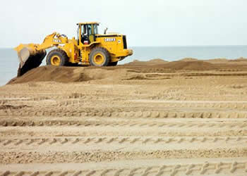
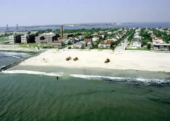

|
Case Study:
Beach Nourishment
In the last section we related the processes of erosion and deposition
to the velocity of the water. This was an oversimplification because
sediments added to or subtracted from the coastal system were
not considered.
We can visualize the results of sediment addition by returning to
our jar experiment. If the water in the jar is being stirred and
carrying a full load of sediment then dumping more sediment into
the water will result in deposition. This is because moving water
can only carry so much sediment. Adding more sediment will choke
the system and deposition will occur.
This gives us a third principle of shoreline erosion and deposition:
3) additions of sediment to the coastal system can cause deposition |
Some coastal communities take advantage of this principle. If they
have a shoreline erosion problem they simply dump sand into the
coastal system. If the sand is added faster than the longshore
current can carry it away then deposition will occur. Beaches
down current from where the sand is added will grow seaward as
an excess of sand is delivered and deposited. This is not a one-time
effort because the growth, stability or erosion of the shoreline
is now determined by the amount of sediment that people provide.
These situations tie the sediment budget of the beach to the financial
budget of the shoreline community. Stability is not guaranteed! |
|

Sand, trucked in from other areas, is added to a beach. Indiana
Dunes National Lakeshore.
Photo from: U.S. Army Corps of Engineers.

Sand-nourished beach near East Rockaway, NY.
Photo from: U.S. Army Corps of Engineers. |


{kind=link}